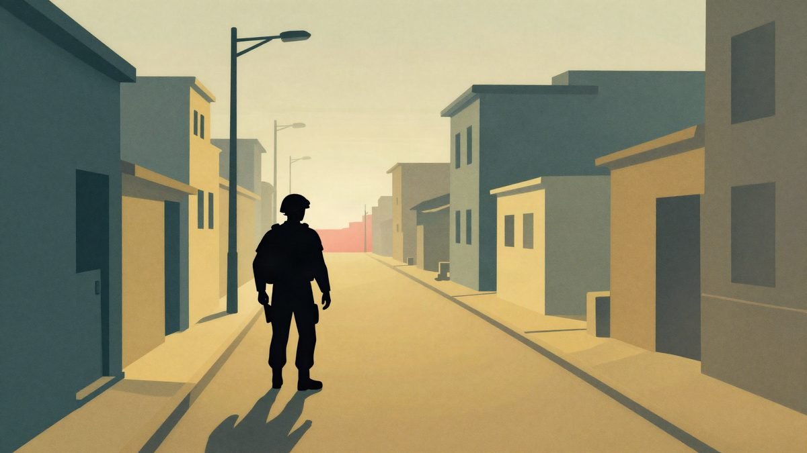

Activision se ispričao zbog snimki tragedije u Itaewonu u igri Modern Warfare 4

Activision će iz igre Call of Duty: Modern Warfare 4 ukloniti stvarne snimke tragedije u Itaewonu u kojoj je 2022. poginulo 159 ljudi. Update je planiran za 12. studenoga, a odluka je uslijedila nakon negodovanja obitelji stradalih. Udruga obitelji tvrdi da nije dobila izravnu ispriku.
Activision je potvrdio da će iz igre Call of Duty: Modern Warfare 4 ukloniti stvarne snimke tragedije u seulskoj četvrti Itaewon. Update koji ih briše planiran je za 12. studenoga. Igra je izašla prošlog tjedna, a odluka je uslijedila nakon negodovanja obitelji stradalih.
Snimke su u uvodnoj sekvenci igre. Prema pisanju medija, prikazuju žrtve na nosilima, vreće za tijela na ulici i ljude koji pokušavaju oživljavati unesrećene. Riječ je o tragediji od 29. listopada 2022., kad je tijekom proslave Halloweena u uskim ulicama Itaewona poginulo 159 ljudi. Tisuće ljudi okupilo se na malom prostoru, a došlo je do gaženja.
Activision je snimke upotrijebio u fiktivnom scenariju igre u kojem Sjeverna Koreja napada Južnu Koreju. Polygon piše da su stvarne vijesti poslužile kao uvod u priču.
Ispričnica i reakcije
U izjavi za južnokorejski MBC, koju prenosi The Korea Herald, Activision je poručio: "Izražavamo najdublju sućut i iskreno se ispričavamo obiteljima stradalih, žrtvama i svima koje je ovaj incident duboko povrijedio ili uznemirio." Tvrdi da on nikad nije namjeravao aludirati na katastrofu u Itaewonu ni na bilo koju drugu stvarnu tragediju niti je trivijalizirati.
Udruga obitelji stradalih u Itaewonu pozdravila je uklanjanje snimki, ali je za BBC rekla da od izdavača nije dobila izravnu ispriku. Obitelji su upotrebu snimki u zabavnom proizvodu ocijenile neprikladnom i bezosjećajnom.
Modern Warfare 4 kritiziran je i zbog prikaza izmišljenog rata između Sjeverne i Južne Koreje. Dvije države formalno su još u ratu jer nakon primirja iz 1953., kojim su prekinute borbe u Korejskom ratu, nikad nije potpisan mirovni sporazum.
Izvor: Polygon